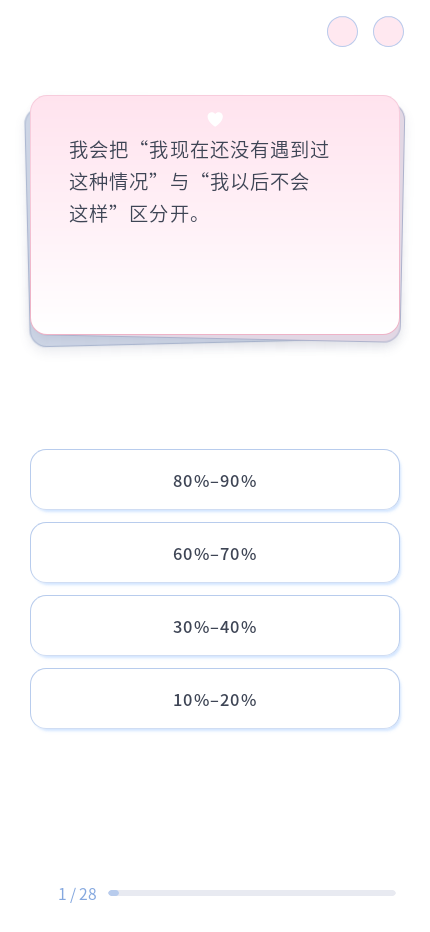
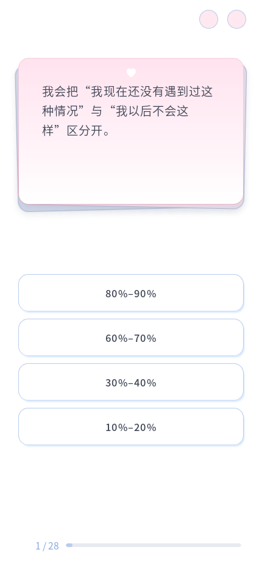

已取消对所有 2–4 字中文词的不可拆分保护，仅保护简短数字和拉丁字母组合。中文严格标点、原 87.4% 内宽、22em 最大宽度、左对齐、字体、边距、短尾行回退均保留。题目原文未改。
430px 宽下 D05 之前第一行在“过”后换行，余约 30.4px，却无法容纳整词“这种”（40.2px）；现在按剩余空间容纳“这”，再自然换行，不添加固定断点。


十视口、全部 96 题共 960 组通过：普通中文不再被 nowrap 包裹、文字完整、边界与左对齐正常、选项无重叠、进度可达、重复 resize 稳定；实际换题动画通过。200% 字体下 C10、C24、C02、A21、D05 阅读通过，相关 Node 测试 2/2。题库、CSS、HTML 和答题控制器哈希未变。